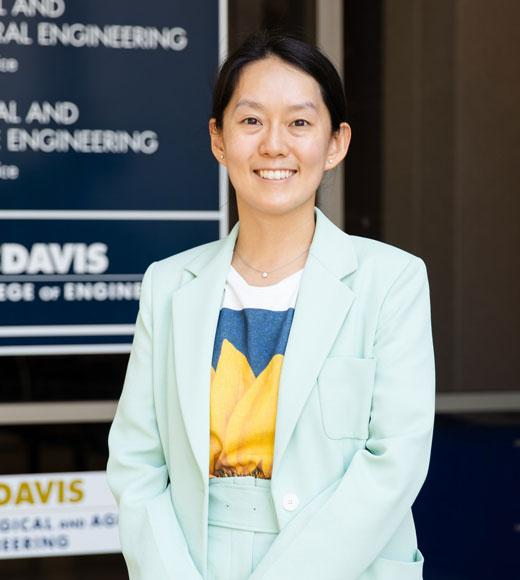

Surl-Hee (Shirley) Ahn is an assistant professor in the Department of Chemical Engineering at the University of California Davis. She received her B.A. in Biochemistry and Mathematics, M.A. in Mathematics, and M.S. in Chemistry at the University of Pennsylvania, and her Ph.D. in Chemistry (Chemical Physics) at Stanford University, advised under Prof. Eric Darve. Subsequently, she worked as a postdoctoral scholar in the Department of Chemistry and Biochemistry at the University of California San Diego (UCSD), advised under Prof. J. Andrew McCammon and Prof. Rommie Amaro, before starting her independent career at the University of California Davis. Surl-Hee is interested in developing enhanced sampling methods for molecular dynamics simulations and applying those methods to study important biophysical phenomena. She was selected to participate in the 2018 MIT Rising Stars in Mechanical Engineering Workshop, was awarded the 2021 ACS PHYS Division Young Investigator Award and was a finalist for the 2021 Chancellor’s Outstanding Postdoctoral Scholar Award at UCSD.